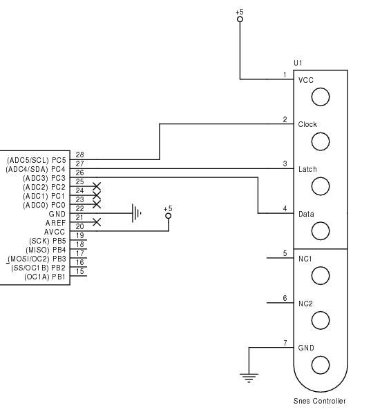
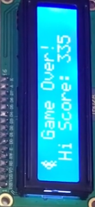
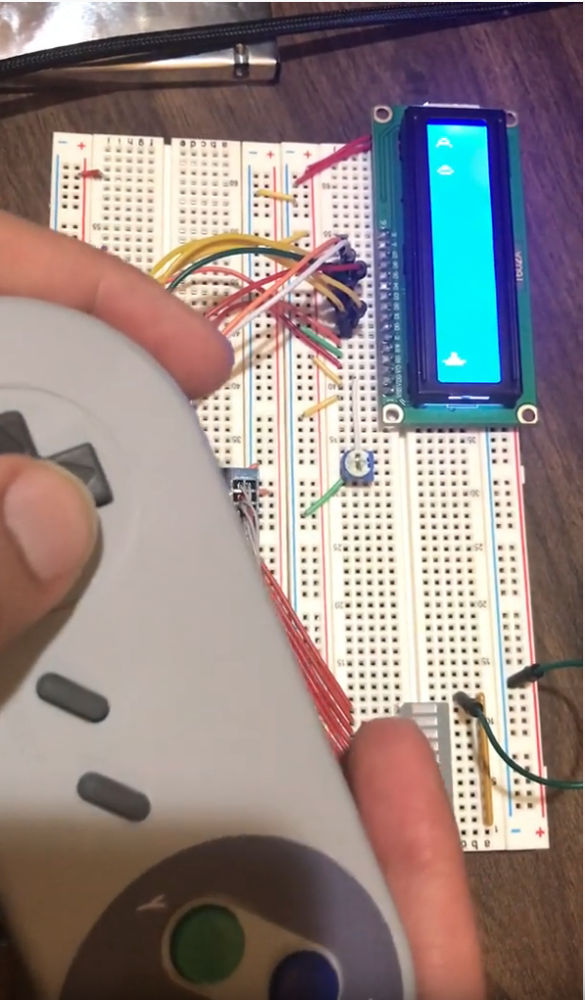
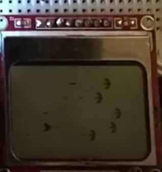

Galaga SNES Fest
Certain games really are timeless. I may have spent only 3 months as a 90's kid, but even I recognize the intellectual genius of the game that is Galaga. So why not recreate it on an Atmega 1284 using atmel studio? Who knows, maybe I could get some school credit for it as well...
 More Breadboarding...
More Breadboarding...
Let's start off with our components. I began this planning to use a cheap 7$ color LED display from amazon, a spare SNES controller for game inputs, and of course an Atmega 1284 microcontroller. Unluckily for me, the 5110 wasn't going to arrive in time for the project I had originally planned this for, so I had to settle with doing the entire thing with a generic 16x2 LCD display :c
Oh well. Time to tackle the SNES.
 SNES pinout sheet
SNES pinout sheet
The controller's communication protocol revolves principly around three pins: Clock, Latch, and Data. The SNES controller recieves a 60 Hz latch signal on pin3 which prompts the controller to latch its button states. The falling edge of each latch signal is followed by 16 clock pulses on pin2. Once during each clock cycle, pin4 is sampled. The controller shifts through the latched button states until all 16 states are transmitted serially.
Once the protocol was deciphered, communicating with it was a piece of cake. I had quite a few problems with game design and the LCD display being way too small to recreate anything that remotely looks like Galaga on it. Another problem was displaying high scores, since powering off the microcontroller erased anything on volatile memory. This was remedied by learning how to write data straight to the uC's EEPROM, where data could be stored safely in between power loss.
 New High Score! It works!
Game design definitely took the majority of my time, but I had fun doing it and learned quite a bit. A few weeks after finishing I was still bummed I had to use the lame 2 lane 16x2 display, so I ended up later redesigning the game to fit a leftover Nokia 5110 display using SPI that a friend had after he had finished his project.
 It works again!